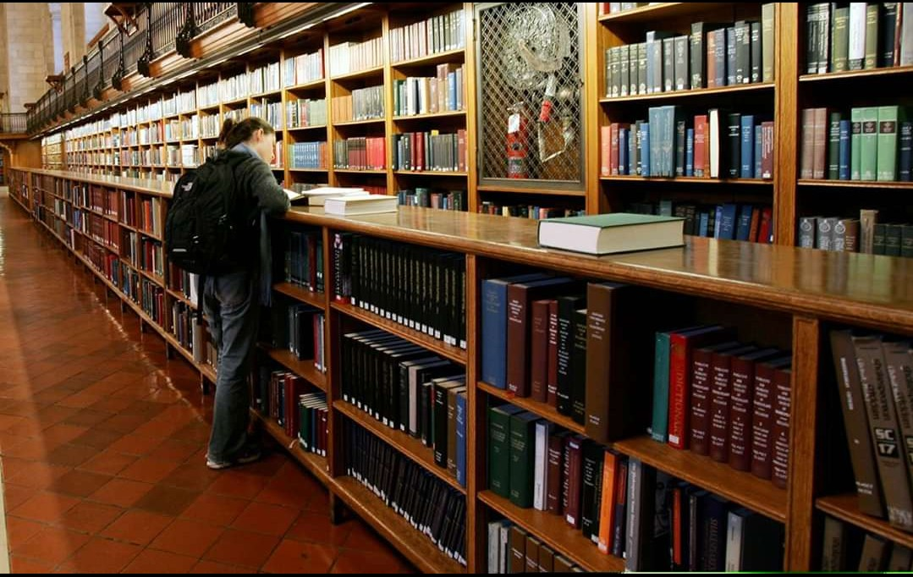

Robert spent nearly 10 years at Microsoft creating software that made it easier for everyone else to write software. Most recently Robert worked on Team Foundation Server on the Administration and Version Control teams. Currently Robert can be found working in the utilities sector on Smart Grid technologies. Robert fled the Minnesota winters and currently lives near Raleigh, NC with his wife Susan and four children, Cecilia, Brian, Ben and Evelyn. When not tackling technical challenges. Robert spent nearly 10 years at Microsoft creating software that made it easier for everyone else to write software. Most recently Robert worked on Team Foundation Server on the Administration and Version Control teams. Currently Robert can be found working in the utilities sector on Smart Grid technologies. Robert fled the Minnesota winters and currently lives near Raleigh, NC with his wife Susan and four children, Cecilia, Brian, Ben and Evelyn. When not tackling technical challenges...
Robert spent nearly 10 years at Microsoft creating software that made it easier for everyone else to write software. Most recently Robert worked on Team Foundation Server on the Administration and Version Control teams. Currently Robert can be found working in the utilities sector on Smart Grid technologies. Robert fled the Minnesota winters and currently lives near Raleigh, NC with his wife Susan and four children, Cecilia, Brian, Ben and Evelyn. When not tackling technical challenges...
